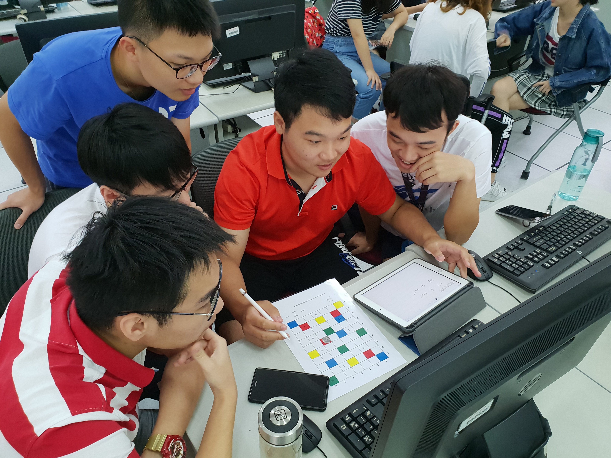

Removing Barriers by Programming Without Computers
computational thinking, computationalthinking, barriers, unplugged, play
Introduction
Computational thinking (CT) has increasingly been recognised as a key competence for learners in the 21st century (Wing 2006). It is not limited to computer scientists but has been identified as a “universally applicable attitude and skill set” (Wing 2006). CT involves problem-solving processes that enable individuals to approach complex challenges by decomposing them into smaller parts, designing algorithms, recognising patterns, abstracting irrelevant details, and applying logical reasoning (Aho 2012). These skills are foundational for programming but are also valuable in wider contexts such as mathematics, engineering, social sciences, and everyday problem-solving (Tedre and Denning 2016).
Despite its importance, the teaching and learning of programming and CT is challenging. For many learners, the initial encounter with programming involves exposure to a programming language and development environment. While these tools are essential for producing executable code, they can impose significant barriers to entry. Syntax errors, cryptic error messages, and the abstract nature of code execution often discourage beginners (Robins, Rountree, and Rountree 2003) and many students focus narrowly on the mechanics of a programming language, rather than grasping the underlying concepts of problem-solving and algorithmic thinking (Koulouri, Lauria, and Macredie 2014).
These difficulties are not confined to school-aged learners. Lifelong learners, professionals seeking to re-skill, and students from non-computing disciplines also experience barriers when first attempting to program. Studies have highlighted that learners without prior computing exposure often report low confidence, high anxiety, and a perception that programming is inaccessible or only suitable for “technical people” (Lye and Koh 2014). Such perceptions contribute to underrepresentation of many groups in computing, particularly women, mature learners, and students from non-traditional backgrounds (Sentance and Csizmadia 2017).
Another barrier is the mismatch between learners’ expectations and the nature of programming tasks. In formal education, assessments often emphasise correctness of code rather than exploration of ideas. Learners may therefore see programming as a high-stakes activity where failure is punished rather than as an opportunity for experimentation and iterative problem-solving (Watson and Li 2014). This can lead to disengagement, particularly when feedback comes in the form of obscure compiler errors rather than supportive guidance.
Alternative methods for introducing CT have been explored over the last two decades. The “Computer Science Unplugged” movement has shown that unplugged activities—teaching computing concepts without computers—can successfully build intuition and engagement (Bell et al. 2009). By using games, puzzles, and physical activities, learners can experiment with computational structures in a low-stakes environment. Similarly, tangible resources such as cards, tiles, and worksheets have been used to teach sequencing, logic, and algorithms in ways that reduce dependence on technology infrastructure (Curzon et al. 2014). These approaches are especially valuable in contexts where computer access is limited, such as in under-resourced schools or outreach programmes (United Nations Educational, Scientific and Cultural Organization (UNESCO) 2023).
This chapter discusses two approaches to teaching programming and CT without the use of computers. The first is the ProgBoard, a printable tool that enables learners to explore sequence, selection, and iteration. The second is a play-kit for first-year computing students, developed to foster computational thinking through playful and tangible activities. The chapter then draws connections between these approaches and the wider challenges of accessibility and inclusion in programming education, concluding with a reflection on the potential of such methods for diverse learner groups.
Unplugged Programming with ProgBoard
The ProgBoard, developed as part of the “Think Like a Computer” initiative (Cutting 2025) and available from thinklikeacomputer.org, provides learners with a structured way to engage with programming fundamentals in a tangible form. It is a printable teaching tool designed to introduce the three fundamental programming constructs of sequence, selection, iteration, and variables all without requiring a computer.
The board itself consists of a grid on which tokens representing instructions can be placed. Problems are posed in the form of challenges, such as navigating a path, following rules, or producing repeated patterns. Learners construct solutions by arranging instruction tokens in order, creating simple algorithms that can be “executed” by following the board step by step.

Sequence
Sequence is taught by requiring learners to arrange steps in a specific order. For example, if the task is to move an object from one side of the board to another, instructions such as “move forward”, “turn left”, and “pick up” must be placed in the correct sequence. Learners can then manually follow the sequence to check whether the task is achieved. This provides an embodied experience of algorithm design, reinforcing the importance of ordering in programming.
Selection
Selection is introduced by conditional markers. For instance, learners may encounter a task where an object must only be picked up “if it is red”. Tokens representing conditional statements are placed on the board, and learners must branch their instructions based on the condition. This tangible representation of branching logic helps learners to understand one of the most challenging concepts in programming: making decisions based on conditions.
Iteration
Iteration is represented by tokens that indicate repetition. For example, a loop marker may allow a sequence of steps to be repeated a specified number of times. Learners may be tasked with drawing a square by repeating a set of instructions four times. Through physically repeating steps, they grasp the efficiency and power of loops compared to writing out repeated instructions.
Variables
Variables are introduced in the form of counters (“keep count of how many…”) initially and then as named variables, for example “x is three, move forward x squares and each time your counter is in a red square, add one to x”. The use of variables in combination with selection for branching logic and iteration allows learners to see how simple algebra aligns with variables in programming and also introduced the concept of state.
Benefits of the ProgBoard
The ProgBoard reduces cognitive load by focusing on concepts rather than syntax. By externalising algorithms into a physical form, learners can see and manipulate their thought processes. Errors become visible as misplaced tokens or illogical sequences, which can be corrected collaboratively. This is in contrast to the intimidating error messages encountered in programming environments.
The tool also supports collaborative learning. Students can work in groups, discuss solutions, and challenge each other to design efficient algorithms. Peer explanation reinforces understanding, as learners must articulate the reasoning behind their token placements.
Research on unplugged activities has shown that such approaches are particularly effective for learners with limited prior exposure to computing (Denning 2017). By engaging learners in hands-on tasks, the ProgBoard provides a stepping stone into programming that lowers anxiety and builds confidence.
The Play-Kit Approach for First-Year Students
A second approach to programming without computers has been developed through the design of a play-kit for incoming first-year university students. This initiative, derived from the work undertaken at Maynooth University on their primary school CT workbook, aimed to introduce learners to computational thinking through playful, tangible interactions (Anderson et al. 2025) so is therefore widely applicable and not limited to students studying computer science.
The project emerged from the recognition that incoming students often have diverse levels of experience in computing. Some may have extensive programming backgrounds, while others may never have written a line of code. A one-size-fits-all approach risks alienating both groups. The play-kit therefore sought to provide accessible, engaging activities that introduce CT concepts in a non-intimidating way.
Design Principles
The play-kit was co-designed by students and academic staff, drawing on resources originally developed for primary school learners but adapted to suit a university-level audience. Several guiding principles shaped its design:
- Accessibility - reliance on colour was reduced to support learners with colour vision deficiencies.
- Visual instructions - activities emphasised pictorial guidance rather than dense text, reducing language barriers.
- Playfulness - tasks were framed as puzzles or games, encouraging creativity and engagement.
- Breadth of CT skills - activities covered decomposition, algorithms, pattern recognition, logic, representation, and abstraction.
Examples of Activities
- Bracelet Patterns: Students extend and complete sequences of beads arranged in patterns, developing skills in pattern recognition, decomposition, and logic.
- Code Breaker: A symbolic substitution exercise where learners decode messages using simple ciphers. This fosters skills in representation and abstraction.
- Escape the Grid: A maze-based challenge where characters must move according to specified rules. This introduces conditional logic and algorithmic pathfinding.
- Castles and Wyverns: A dice-based game where outcomes depend on nested conditions, encouraging learners to apply probabilistic reasoning and selection.
- Marble Race: Learners simulate the timing of marbles released into tracks, exploring concurrency, sequencing, and time-based reasoning.
These activities allow learners to explore computational concepts in a playful environment. Unlike programming assignments that require precise syntax, the play-kit enables safe exploration. Mistakes are opportunities for discussion and learning rather than points lost.
Preliminary Evaluation
Early feedback from workshops suggested that the play-kit was effective in lowering barriers for learners who felt intimidated by programming. Students reported increased confidence, greater willingness to collaborate, and enjoyment of the playful format (Anderson et al. 2025). The tangible, hands-on nature of the activities was particularly valued, as it contrasted with the abstractness of code.
Discussion
The two approaches explored in this chapter—the ProgBoard and the play-kit demonstrate the potential of introducing computational thinking (CT) and programming concepts without direct reliance on computers. While they differ in context, design, and target audience, they share a common aim: to make programming more approachable by lowering barriers and foregrounding concepts before syntax. By situating programming in a tangible and playful space, both approaches challenge the assumption that programming must begin with a computer and instead suggest that thinking skills can, and perhaps should, be nurtured in more accessible ways.
One of the most significant contributions of unplugged approaches is the way they reduce cognitive load for beginners. Research has consistently shown that novices often struggle with the dual burden of understanding abstract programming concepts and mastering the mechanics of a programming language at the same time (Sweller 1988). For instance, a student may conceptually understand that a loop repeats a set of actions, but may be unable to express this understanding in Python, Java, or C without encountering frustrating syntax errors. By externalising programming logic into physical forms, as seen in the ProgBoard tokens or play-kit puzzles, learners can focus on what the computer is being asked to do, rather than how the instructions are formally expressed. This separation of concerns provides a clearer path to mastery: concepts first, formal languages later.
Equally important is the potential for these activities to support diverse learner groups. Traditional programming environments tend to privilege students who are already confident with computers or who have prior experience in coding. This creates inequities, with learners from non-computing backgrounds often left behind. Lifelong learners, interdisciplinary students, and those with limited digital literacy can find the initial learning curve intimidating, reinforcing the stereotype that programming is only for “tech experts.” By contrast, both the ProgBoard and the play-kit offer accessible, low-barrier entry points where learners can engage in computational problem-solving without needing technical fluency. This is especially relevant in outreach contexts, professional development programmes, and in regions where reliable access to computers is limited.
The affective dimension of learning should not be overlooked. Fear of failure is a well-documented barrier in programming education, where small mistakes in syntax can lead to discouraging error messages and wasted time (Watson and Li 2014). In unplugged contexts, however, mistakes become opportunities for dialogue and playful exploration. If a sequence of tokens fails to solve a ProgBoard puzzle, learners can quickly rearrange the steps and try again. If a group misinterprets the rules of a play-kit game, the result is not an intimidating compiler error but a chance to reflect, discuss, and iterate. This transformation of errors into constructive learning moments fosters resilience and helps to cultivate a growth mindset around programming.
Furthermore, the playful nature of these activities contributes to learner motivation and engagement. Play has long been recognised as a powerful mode of learning (Papert 2020; Whitton 2022). It encourages experimentation, risk-taking, and persistence, qualities that are central to effective problem-solving in computing. By embedding CT tasks into puzzles, games, and tangible challenges, the ProgBoard and play-kit avoid framing programming as a purely technical skill. Instead, they emphasise creativity, exploration, and fun—qualities that can be especially important for engaging students who might not initially see themselves as “coders.” For example, the fantasy-themed “Castles and Wyverns” dice game from the play-kit illustrates how algorithmic logic can be learned through an imaginative context, rather than an abstract lecture on conditional statements.
The transferability of skills developed in these unplugged settings is also crucial. While the activities do not produce working code, they cultivate habits of mind—such as decomposition, abstraction, and algorithmic reasoning—that can be readily applied in formal programming environments. In this way, unplugged activities function as a bridge. Once learners have gained confidence with the underlying concepts, they are better equipped to face the complexity of programming languages and development environments. This scaffolding effect has been linked to improved retention and success rates in introductory programming courses (Luxton-Reilly et al. 2018).
Finally, both approaches point to the broader potential of programming without computers. Their application need not be limited to early stages of computer science education. They could be adapted for interdisciplinary teaching, allowing students in fields as varied as biology, business, or the arts to engage with computational thinking in a way that feels relevant to their domain. They could also be used in informal education settings—libraries, community workshops, or online learning platforms—to broaden participation in computing. For educators, unplugged methods provide flexible, low-cost tools that can be adapted to different curricula, learner profiles, and institutional contexts.
Taken together, these observations suggest that unplugged approaches should not be viewed merely as supplementary activities or temporary scaffolds, but as integral components of a broader strategy to democratise computational education. By making programming more tangible, playful, and inclusive, they help dismantle barriers that have historically excluded many learners from engaging with computing. In doing so, they lay the groundwork for more diverse, resilient, and conceptually grounded cohorts of future programmers.
Conclusion
Programming without computers represents an effective and inclusive approach to developing computational thinking skills. By focusing on concepts rather than syntax, learners are able to engage with programming fundamentals in an accessible, playful, and low-stakes environment.
The ProgBoard demonstrates how simple, printable resources can teach sequence, selection, and iteration. The play-kit for first-year students illustrates how playful, tangible activities can introduce decomposition, algorithms, logic, and abstraction in ways that reduce anxiety and increase motivation.
Together, these approaches highlight the value of unplugged activities as a means of lowering barriers, supporting diverse learners, and broadening participation in computing. They serve as stepping stones to computer-based programming, ensuring that learners enter digital environments with confidence and conceptual clarity.
It is concluded that the continued development and evaluation of unplugged programming approaches has significant potential for education at all levels. By reimagining how programming is introduced, educators can make computational thinking accessible to all learners, regardless of background or prior experience.